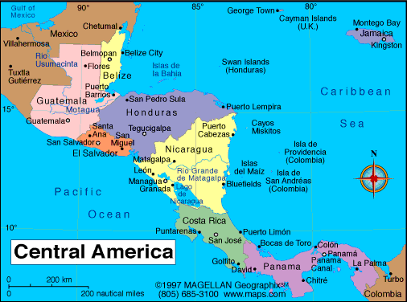
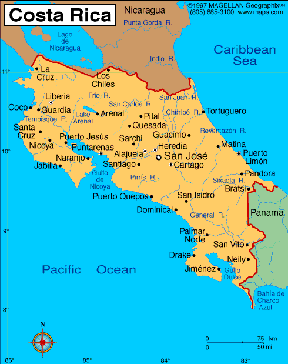

TOPICS MY BLOG e-mail me | COSTA RICA DIARY (February, 2006) Introduction Go to: Arrival instructions Feb 3-5 Feb 6-8 Feb 9-10 Feb 11-12 Feb 13 Feb 14-15 Feb 16-19 Back to: Travel page |
My wife, Maxine Fechter, and I thought this would be a dream nature trip. Wrong kind of dream. The
often fascinating content or the travel was heavily
compromised by the seemingly endless bus rides over unpaved and barely
treated terrain + my difficulty at enduring heat and hiking
and bugs that others (and most were in my age range) seemed to take in
stride. Our tour company director, Josh,
had assured us that his older parents had no trouble with the same trip and we would not find it arduous. No doubt my physical discomfort contributed to the crankiness that pervades the experiences I describe. Some context might be useful to readers:
NOTE: Within the diary, I include statements from the literature supplied by the tour company. That content is always in italics. Below are the introductory comments within that literature. MAPS   | |